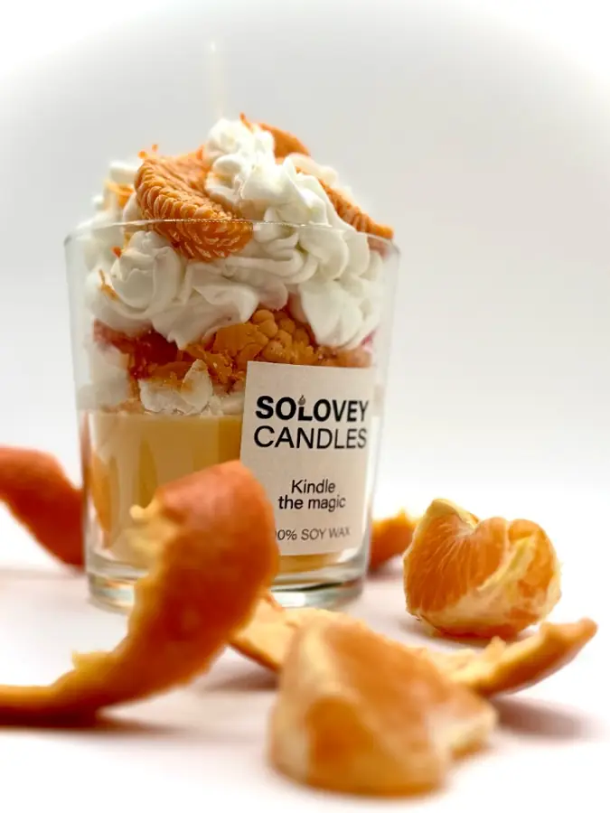

Авторские свечи
Свечи ручной работы на заказ
Когда обычной формы мало. Соловей собирает свечу вокруг идеи, настроения, цвета и деталей — от спокойной природной композиции до почти невозможного референса.

Необычные и десертные свечи
Можно заказать авторскую свечу в подарок, для дома или под конкретную историю. В работах появляются сложные формы, ягоды, кофейные зёрна, флористические мотивы и детали, которые сначала хочется рассмотреть, а уже потом поверить, что это воск.
Один из характерных заказов — свеча в виде пиццы. Все её элементы были сделаны из воска. Поэтому запросы вроде «свеча в виде еды», «десертная свеча», «фигурная свеча на заказ» и даже странный референс здесь не повод отмахнуться, а начало разговора о материале и возможностях.
Как мы придумываем свечу
- Вы присылаете референс или описываете человека, повод и настроение.
- Мы обсуждаем форму, цвет, наполнение и важные детали.
- Соловей обозначает возможности материала, срок и стоимость.
- После согласования свеча создаётся вручную под ваш заказ.
Точная копия чужой работы здесь не цель. Важнее собрать собственный образ — узнаваемый, живой и подходящий тому, кому он предназначен.
Стоимость
Свечи и другие изделия ручной работы — от 3 000 ₽. Цена зависит от формы, размера, количества деталей и сложности изготовления. Все условия согласуются до начала работы.
Рассказать Соловью идею ↗